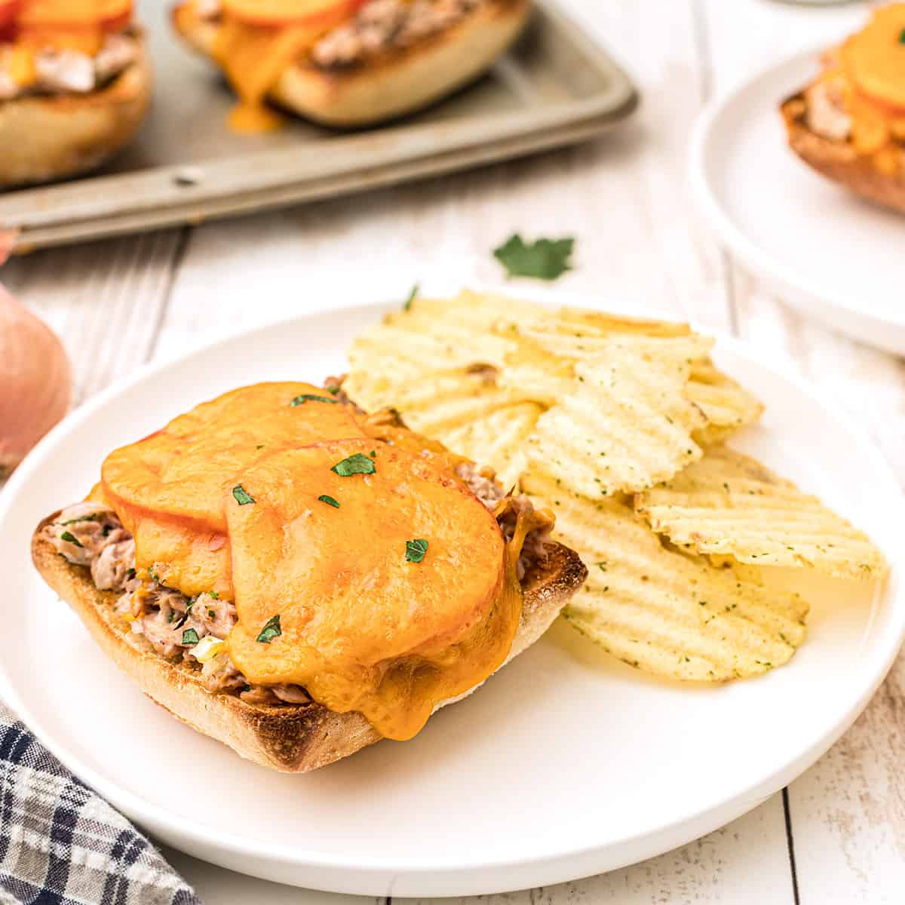

Tuna Melt
An easy to make snack
Ingredients
- Tuna
- Mayonaise
- Garlic powder
- Cayenne
- Olive Oil
- Cheese
- Bread
Steps
- Mix tuna, mayo and spices in small bow and mix until combined. Add olive oil and continue to mix until velvetty
- Toast bread and preheat oven
- Layer the tuna spread on toast and top with cheese, cook in oven until cheese is bubbly and slightly brown Back to Main